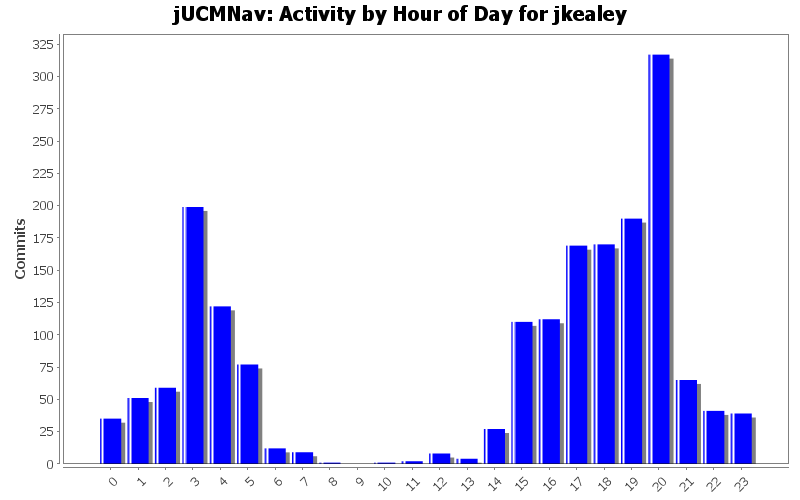
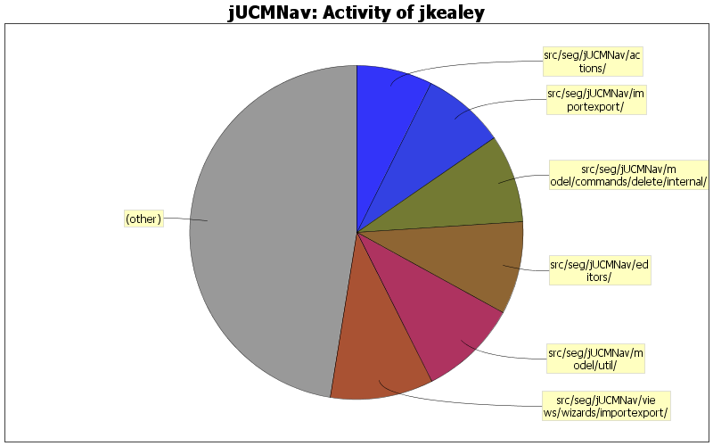

Fix problem with sanitizeURN
0 lines of code changed in 1 file:
bug 387: error on cancel after map creation
0 lines of code changed in 1 file:
bug 341: automatic update of pluginbinding properties
0 lines of code changed in 2 files:
sorted resource files
0 lines of code changed in 2 files:
fixed resource file problems.
0 lines of code changed in 5 files:
Fixed issue with add ucm/grl not being in some context menus.
0 lines of code changed in 1 file:
Bug 381: 3.1: remove extra items from contextual menus
(forgot to commit GRL)
0 lines of code changed in 1 file:
Bug 381: 3.1: remove extra items from contextual menus
0 lines of code changed in 1 file:
Not sure why JF was closing editors loaded by the ImportWizard, but he was doing it even if the editor had not been opened. added an extra flag to prevent it from being closed when the ImportWizard did not explicitely open it.
0 lines of code changed in 1 file:
bug 414 component fill color problem on undo
0 lines of code changed in 1 file:
bug 417: import wizard: overwrite doesn't work if file is open
0 lines of code changed in 1 file:
bug 420: LinkRef bendpoint not correctly positioned when zoomed
0 lines of code changed in 1 file:
bug found by gunter with hiding stub labels
0 lines of code changed in 1 file:
0 lines of code changed in 1 file:
Component/Responsibility references have no descriptions, while they should include that of their respective references
Fixed for respRef
0 lines of code changed in 1 file:
invalid class was used.
0 lines of code changed in 1 file:
bug 411: error with strategy view
bug 405: error with element view
Not sure that everything with 405 is fixed. Leaving open for more investigation.
0 lines of code changed in 4 files:
bug 408: new perspective; it is opened with new file; created default view/new wizard shortcuts
0 lines of code changed in 4 files:
bug 402 - autolayout of GRL diagrams
0 lines of code changed in 4 files:
language issue.
0 lines of code changed in 1 file:
(318 more)